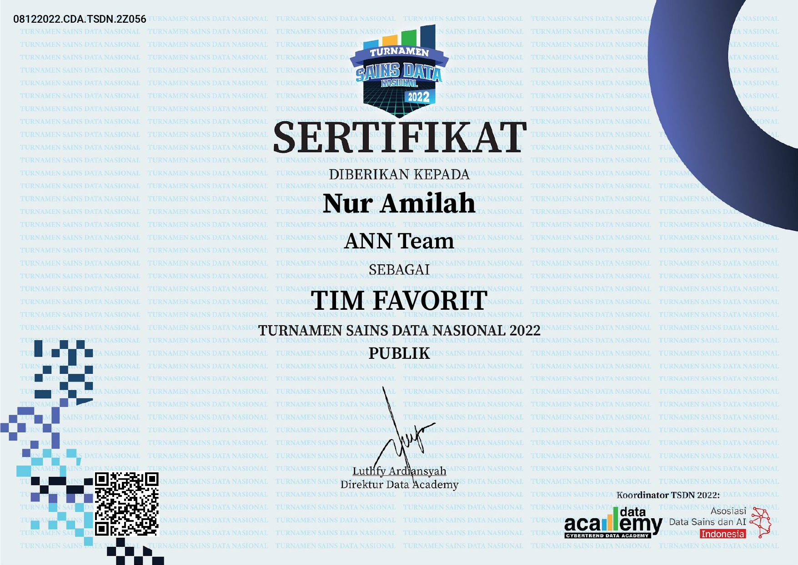
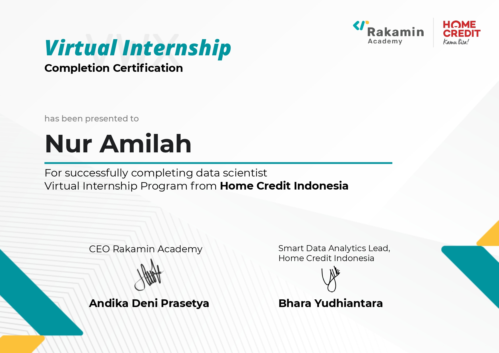
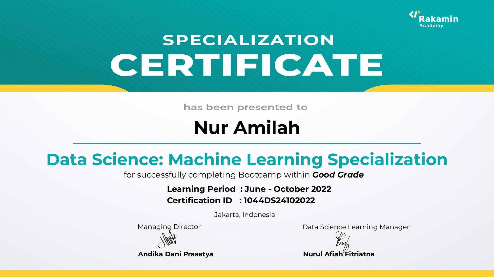
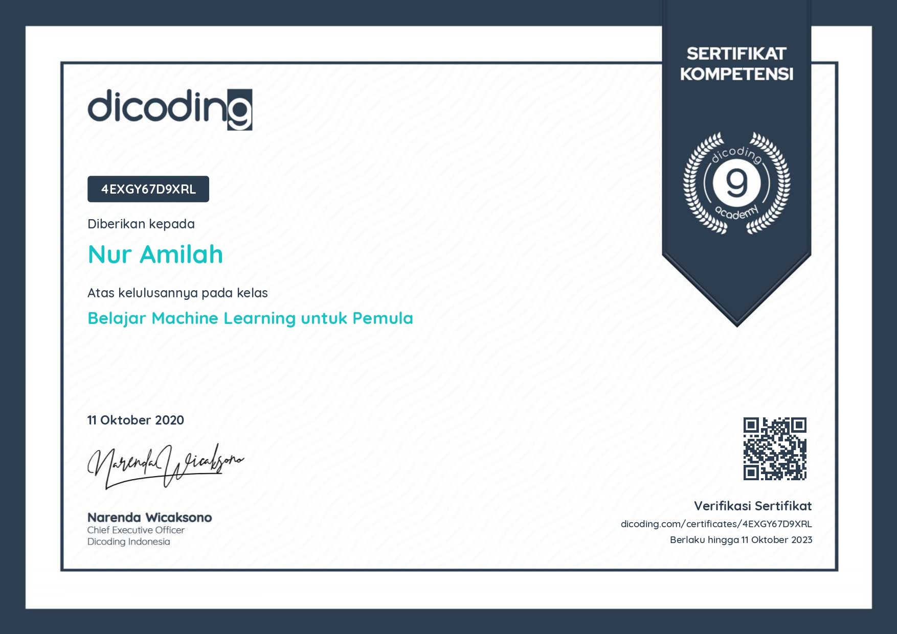

Hi! I'm Nur Amilah, undergraduate student in Informatic Engineering
Universitas Muhammadiyah Prof. Dr. Hamka .
Data Analyst | Data Scientist | Machine Learning Engineer
| Data Engineer
About Me

Bachelor of Informatics Engineering with a GPA of 3.82 and graduated for 3.5 years and graduates with the highest GPA in the faculty of engineering. Have an internship experience for 2 year in the field of data. I’m a curious person who loves to learn and explore something new as well as look for a solution to any problem. I have a positive mind and a good ability to adapt and create a stable environment around me. I’m a fast worker who works systematically, meticulously, accurately, neatly, and able to work under pressure.
Project Study
CHURN FOR BANK CUSTOMER
Customer Indicated Churn : Customers who have more than 2 products Customers over 34 years old Customers with inactive members Gender Female; Recommendation Business Team : Give scholarship or advice about financial literacy or gift merchant Give Service like coupun discount; Evaluation Model : Selected model : XGBoost dengan SMOTE, AUC score = 0.86 Recall from model : 75% Percentage Saving cost with model : 69%.
Business optimization in predicting customer churn : a machine learning approach
From the data visualization, it is obtained that the churn ratio has a correlation with tenure, complaints, cashback Amount, & preferred order cat; The results of predicting churn are strongly influenced by the level of Tenure, Complaint, Number of Addresses, and cashback Amount; The results of the Survival Analysis, the customer has the greatest survival chance in No Complain, Marital Status Married, Payment Mode Credit Card, Order Category Grocery; RFM Segmentation results show priority customer treatment in the Loyal, New, Promising, and Lost Potential segments; Total Expected Loss of $ 910,687; Estimated Revenue Uplift; Order category Grocery $42,448; Payment Credit Card $ 91,785; Payment Debit Card $ 78,543
Credit Score Model
Recommendations 1 : Create a campaign so that more student, accountant, high skill tech staff, manager interested in applying for a loan; A client with an income type of student can be said to be a client who is capable of repaying the loans whether with a cash loan or revolving loan (100% of applications approved). But there only 0.005% of applications come from the student. A client who works as an accountant can be said to be a client who is capable of repaying the loans (95% of applications approved). But, there is only 3.19% of applications come from an accountant. So do, the client who work as high skill tech staff and manager, they are capable of repaying the loans, but there are only a few applications that come from them.
Recommendations 2 : Need further analysis, you can survey to find out if there is a problem if a client with maternity leaves or unemployed takes a cash loans contract. So, in the future, if there are clients with that type of income, you can recommend the right contract type so that their applications will be approved; Clients with maternity leaves and cash loans can be said to be a client who is incapable of repaying the loan (100% of applications rejected). On the contrary, all clients with maternity leave but taking revolving loans to have their applications approved. For unemployed clients, more than 50% of them have a problem repaying their loans if they take cash loan contracts. Meanwhile, all unemployed client who takes revolving loans is capable of repaying the loan.
Publication Research
QEEG-based Brain Mapping of Internet Pornography Addicted Adolescents
The Indonesian government for many years has tried to protect the public from the dangers of pornography by blocking various sites. Although various efforts have been made to block access to pornography, a report from the Ministry of Women's Empowerment and Child Protection mentioned that 97% of Indonesian teens were exposed to pornography from the internet. In order to increase awareness, especially in the addiction phase, scientific evidences showing the bad effects of pornography addiction is needed. In this study, 15 teens addicted to internet pornography underwent brain mapping using electroencephalography (EEG) in a resting state for approximately 20 minutes. The data were processed using a quantitative EEG (QEEG) approach, especially Fast Fourrier Transform (FFT) by first removing all artifacts on the electroencephalogram during recording. The analysis focused on the delta wave in the forebrain, showing the dominance of the prefrontal cortex, which has implications for cognitive function decline, especially the braking system among these teens addicted to internet pornography. The decline in cognitive function causes teens to lose the ability to determine what is right and wrong or refrain from doing wrong. Based on the results, efforts to educate teens about the dangers of pornography addiction need to be further promoted.
The Influence of Pop Up Notification on Visual Attention and Learning
The tutorial videos contain an explanation of a learning material taught to students. The use of tutorial videos is common during the COVID-19 pandemic. This situation makes the teachers change the learning model into a video conferences or tutorial videos. However, the use of tutorial videos is often accompanied by opening other applications in parallel causing pop-up notifications to appear. The pop-up notification makes students not focus on the material explained in the tutorial videos. This raises the question of whether it will affect the learning process in understanding the learning material. Therefore, this study aimed to explore the influence of pop-up notifications on tutorial videos. Eye movements of all participants (N = 50) were recorded when viewing tutorial videos on various operating systems with or without the pop-up notification. Based on the results, after being shown a tutorial videos with a pop-up notification, participants paid attention to the pop-up notification. However, there were no significant differences in learning outcomes of students after viewing tutorial videos with or without pop-up notification.
Certifiacte
|  |  |
 |
 |
|  |  |
 |
 |
 |
|
 |
 |